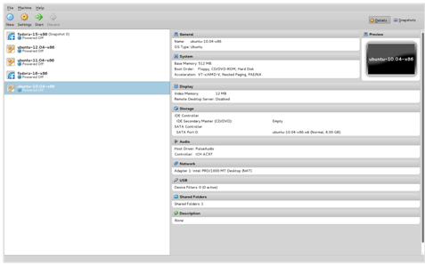
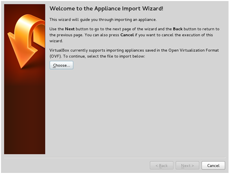
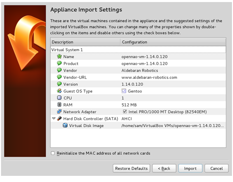
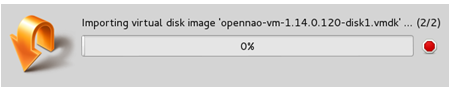
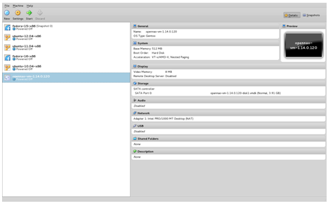
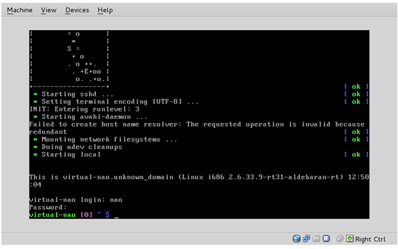
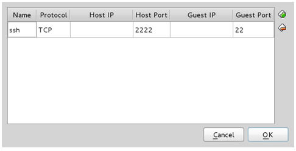
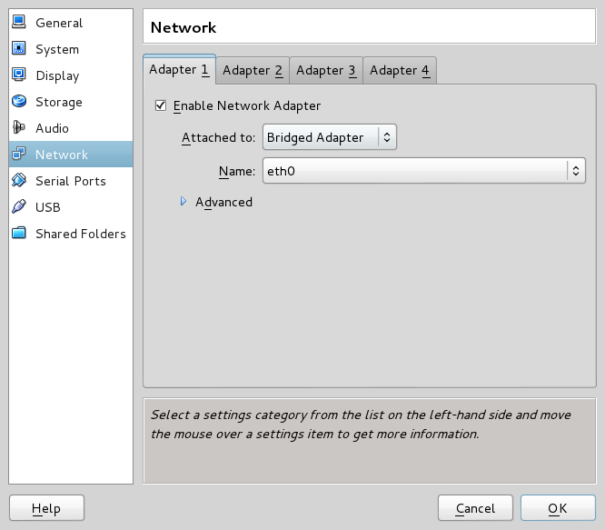
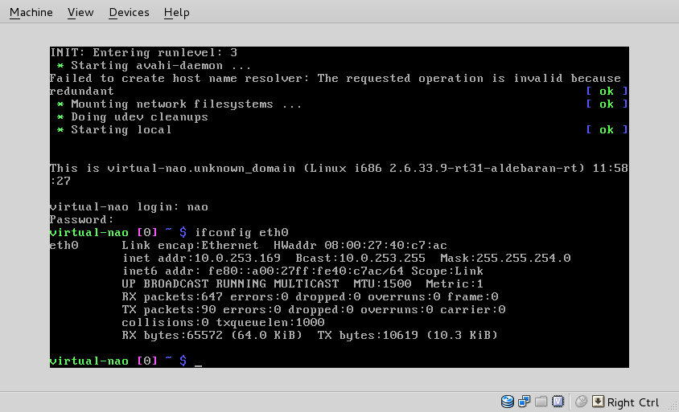

Setting up the NAOqi OS virtual machine¶
This step-by-step tutorial has been done using VirtualBox.
Getting the NAOqi OS virtual machine¶
Retrieve the following file: opennao-vm-<VERSION>.ova
You can download the latest release from Aldebaran Community website. For further details, see: Downloading & Installing Aldebaran Software.
Importing the NAOqi OS virtual machine into VirtualBox¶
Prerequisite¶
Get VirtualBox on your development machine:
| Linux | It should be available through the package manager of the installed distribution. |
Windows Mac OS |
|
Setting up the NAOqi OS virtual machine in VirtualBox¶
| Step | Action |
|---|---|
Start VirtualBox. If you launch a newly installed VirtualBox, then there is no existing virtual machine in the left column. |
|
Choose File > Import Appliance. The following window is displayed:  |
|
Browse and open the The details of the imported virtual machine will be displayed.  |
|
Click the Import button to start the importation. This may take few minutes, be patient: Congratulations! The NAOqi OS virtual machine was successfully imported.  |
{kind=link}
{kind=link}
{kind=link}
{kind=link}
{kind=link}
{kind=link}
Using the NAOqi OS virtual machine¶
Launching the NAOqi OS virtual machine¶
| Step | Action |
|---|---|
In VirtualBox, select the NAOqi OS virtual machine, then click the Start button. It is launched in its own window:  |
|
Here, you are in a console. Refer to NAOqi OS - user accounts for logins and passwords. |
{kind=link}
Accessing the NAOqi OS virtual machine through ssh¶
By default, the host port 2222 is forwarded on the ssh port (22) of the
NAOqi OS virtual machine.
Thus, after launching the NAOqi OS virtual machine, one can easily log in over ssh:
{kind=link}
{kind=link}
Refer to NAOqi OS - user accounts section for logins and passwords.
Exchanging data between the host and the NAOqi OS virtual machine¶
Note
This problem is only addressed using command line tools.
Warning
All the following commands are run on the host system.
Using a Linux or Mac OS host¶
On UNIX hosts, use scp.
Sending data from the host to the NAOqi OS virtual machine:
scp -P 2222 <source path on the host> nao@localhost:<destination path inside the virtual machine>
Retrieving data from the NAOqi OS virtual machine on the host:
scp -P 2222 nao@localhost:<source path inside the virtual machine> <destination path on the host>
Using a Windows host¶
On Windows hosts, use pscp, a command line tool, provided within Putty.
Prerequisite¶
Locate the Putty installation directory, assuming it is installed in
C:\Program Files\Putty
Start a command window and go to the Putty installation directory:
cd "C:\Program Files\Putty"
Sending data from the host to the NAOqi OS virtual machine¶
pscp -P 2222 source <source path on the host> nao@localhost:<destination path inside the virtual machine>
Retrieving data from the NAOqi OS virtual machine on the host¶
pscp -P 2222 nao@localhost:<source path inside the virtual machine> <destination path on the hos
Tweaking the NAOqi OS virtual machine configuration¶
Warning
The NAOqi OS virtual machine system does not currently include CDrom support.
Thus, installing guest additions is not possible.
Changing the network configuration¶
NAT configuration¶
By default, the NAOqi OS virtual machine network configuration uses NAT.
Using this the NAOqi OS virtual machine is reachable, without any knowledge
about its network settings, just logging on localhost (see
Accessing the NAOqi OS virtual machine through ssh).
Port forwarding¶
The port forwarding settings are available under the menu Machine > Settings, then select the Network section (or just click Network on the right column after selecting the right virtual machine).
Expand the advanced features by clicking on Advanced:
{kind=link}
Open the port forwarding table:
{kind=link}
From here you can set any redirection you want.
Setting sub-network¶
It may be necessary to change the default sub-network on which the OpenNAO virtual machine is connected.
To make this change, there is no other way but command line:
VBoxManage modifyvm <virtual machine name> --natnet1 "<network>/<netmask length>"
Note
This command line must be run when the NAOqi OS virtual machine is not running.
Example:
VBoxManage modifyvm opennao-vm --natnet1 "192.168.10.0/24"
Bridge configuration¶
If you prefer the NAOqi OS virtual machine has its own IP address on the same sub-network as the host is, then you migth be interested by using the bridge network configuration.
To do so, just select Bridged Adapter in the Network configuration window:
{kind=link}
Then, the easiest way to know the IP address of the NAOqi OS virtual machine is:
Start the NAOqi OS virtual machine;
Logging on the NAOqi OS virtual machine through the console;
Run the following command:
ifconfig eth0In the following example, the IP address of the NAOqi OS virtual machine is:
10.0.253.196.
{kind=link}